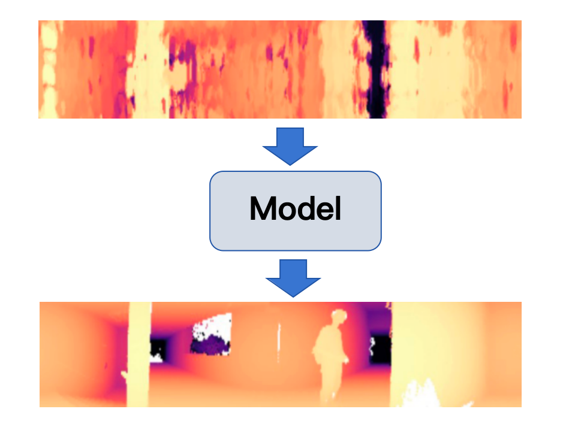
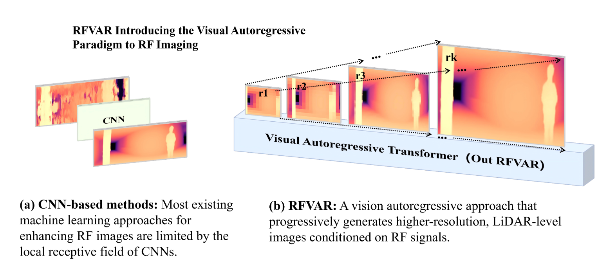
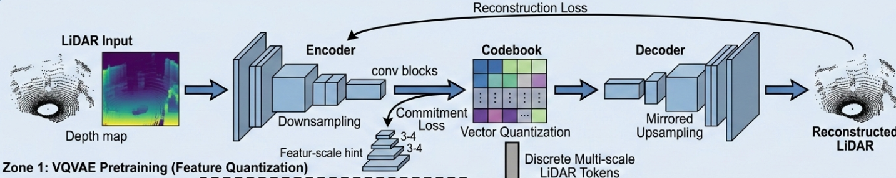
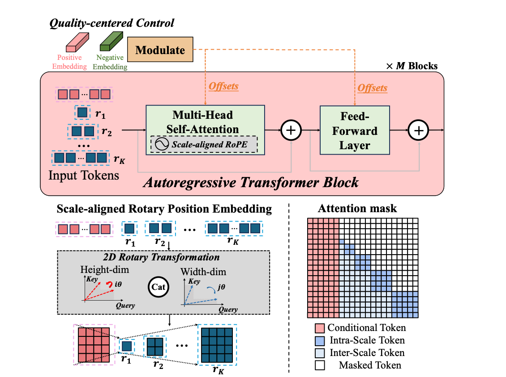
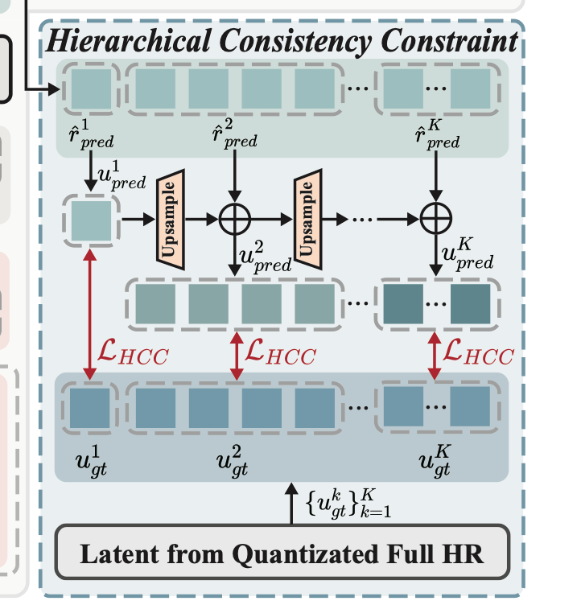
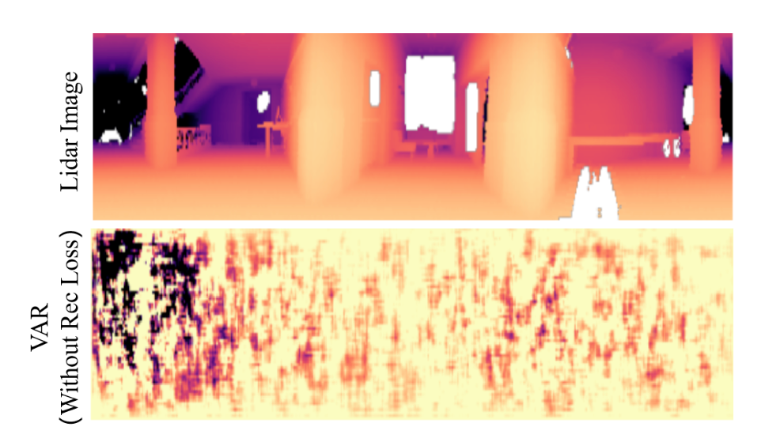
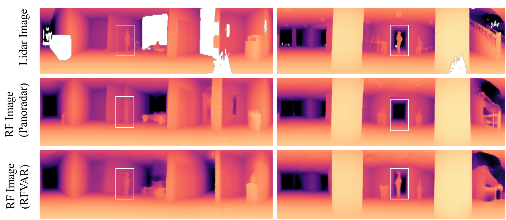
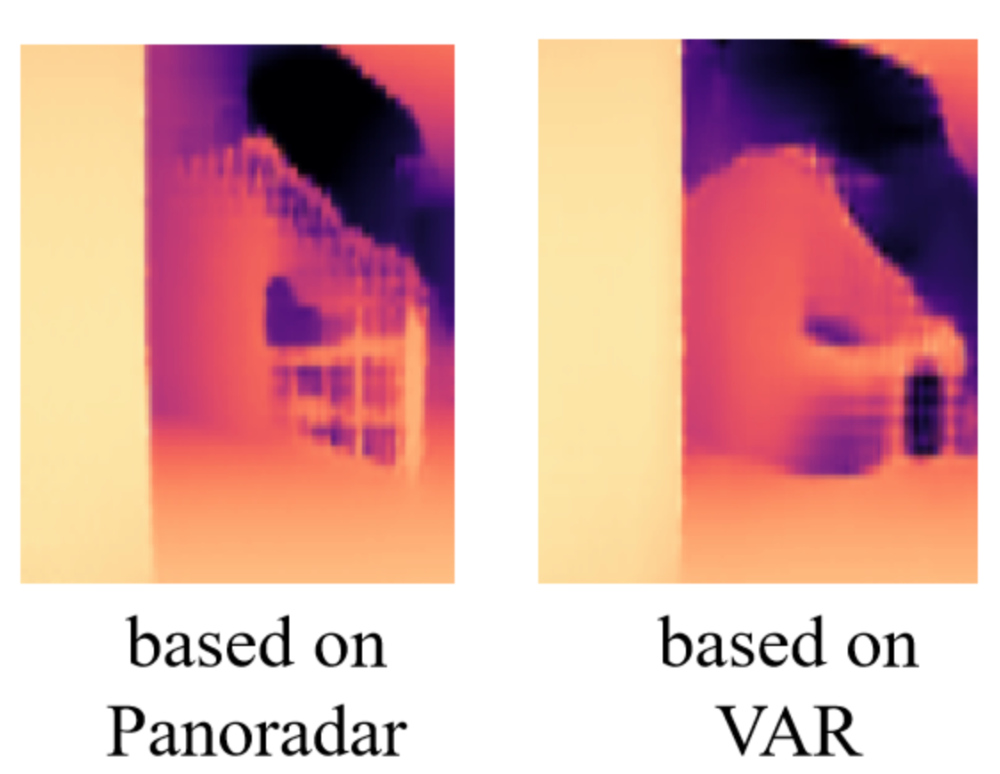
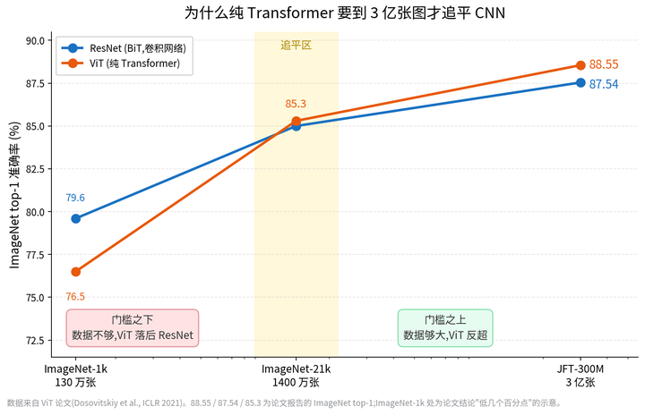

Research / Mine
RFVAR:基于视觉自回归实现 RF Imaging
使用视觉自回归的方法，以 RF Signal 作为输入，生成分辨率更高的深度图。
前言
要做的任务是基于 RF Signal，得到一个深度图，ground truth 是对应 lidar 收集到的数据，参考的工作是 Panoradar(mobicomp 2024)。 input 的 RF shape 是 [Batch, 256, H, W]，其中 256 是每个子载波接收的信号，target depth map shape 是 [B, 1, H, W]。

Panoradar 在 Machine Learning（ML） 这一步用的是一个 unet，效果已经很不错了。在 RF 到 depth 这个任务中，ML 要做的事情既可以理解为提升RF分辨率，也可以理解为用 RF 作为条件，去生成一个 depth map。无论哪一种理解，Auto Regressive（AR）模型近期的工作都能涵盖，如基于低分辨率信号提升分辨率（VARSR（ICML2025），AlignVAR(CVPR2025)），或者基于一个条件信号做图像生成（VAR(NeurIps 2024)）。于是便考虑基于 Visual auto regressive 的方法做当前的 RF to depth 的任务，遗憾的是最终效果不好，本文将记录方法迁移过程，实验结果以及反思，相关代码在：https://github.com/LLR22/RFVAR.git。
方法概述
常规 VAR 的过程是这样的：首先预训练一个 <font style="color:rgb(0, 0, 0);">multi-scale </font>VQVAE ，关于 VQVAE，此处不再赘述，预训练目标是想要训练出一个离散的图像 representation，因为直接在 pixel 尺度做 AR 开销很大，所以经过 VQVAE 做压缩，在特征空间内做AR。该 representation 可以被表示为：
$ F = \sum{_i^n {F_i}} $
每个 F 的 shape 是 [B, L_i. C]，其中 n 是设置的 scale 尺度，L_i 是对应 scale 的 tokens 数量。具体来说：
$ F_i = DS(F) - UP(F_{i-1}) \\ F = Encoder(Image) $
其中，DS 是下采样操作，将 [B, C, h , w](h*w = L) 的 F 下采样到对应的 scale，然后减去上一个scale的F上采样到当前 scale 到特征，目标是不同 sacle 之间没有冗余。
在 VQVAE 预训练完成后，就进入到 VAR 主模型，VAR 基于多层 transformer 架构，自回归地预测每一个 scale 的 F_i 的概率分布，这一过程表示为：
$ \mathbf{z}_i = \operatorname{VAR}_{\theta}(RF, F_{<i}), \qquad p_{\theta}(F_i \mid RF, F_{<i}) = \operatorname{Softmax}(\mathbf{z}_i). $
使用对应的mask，transformer 的架构能够并行地去训练每一个sacle的生成过程，这里也不再赘述。

实践及实验结果
VQVAE 预训练
在 RF to depth 这个任务中，我们最终想要得到的是 lidar 得到的 depth map 的分布，因此在预训练 VQVAE 时，直接用 target 的 depth map 去训练，训练对应的 depth map encoder/decoder。同时，也在这里预训练 RF encoder，为后面 VAR 模型提供一个好的先验。

这一阶段的损失函数如下，其中 lidar 指的是 target depth map，此处为了与 RF 信号区分，因此用 lidar 表示。
$ Loss_{rec} = l1(lidar, lidar_{rec}), Loss_{align} = l1(F_{rf},F_{lidar}) $
VAR 训练
VAR 训练与常规的 VAR/VARSR 也没多大区别，都是将 RF encode 后的 representation 作为条件注入，然后用多层 transformer 去学习如何基于 F_{<i} 生成 F_i 。
在条件注入上，VAR/VARSR 采用的方式是 Concat(context, F_1, F_2, ... F_n), 训练过程就是基于 context去生成 F_1, 基于 F_1, context 去生成 F_2， ...。不过，VAR 的context 是文本，VARSR 是低分辨率的图像，在当前任务中，RF 的shape 是与 final scale 的 depth map shape一致的，比较大，直接用 concat 的方式，transformer 处理的序列有点太长了，训练也容易爆显存，因此这里我还尝试了将 RF 条件采样到多个尺度然后通过加法注入，以及用 cross attention，将 RF 条件作为 cross attention 的 k/v 注入。不过，实验表明，这三种方式的效果其实差不多。

损失函数
VAR 和 VARSR 的损失函数只有<font style="color:rgb(0, 0, 0);">Cross-Entropy Loss，</font><font style="color:rgb(0, 0, 0);">也就是 VAR 最后得到的 shape 为 [B, L] (L= sum{L_i}) 的 logits 与实际上 [B, L ] 的每个 token 在 codebook 上的分布的交叉熵损失。</font>
<font style="color:rgb(0, 0, 0);">这个损失存在一些问题，首先它平等看待每个 token，而 scale 越大，tokens数量越多，因此天然更偏向去做好后面 scale 的分类，而忽略前期 scale。另一方面，模型可能分类做得好，但实际图像重构出的效果有偏差。AlignVAR 也提到了这个问题，并且指出如果早期 scale 做不好，会严重损害整体的效果，AlignVAR 对此的解决方式是加了一个 hcc loss，如下图，相当于每个 scale 的 logtis 先采样直接得到每个尺度的特征，然后每个尺度的特征与 target 的每个尺度的特征做 l2 loss 计算，然后加起来。</font>

我们也引入了这个 hcc loss，但是发现只有这两个 loss 重构出的图相当糟糕，如下。对此，我们任务原因是主 loss 是 ce loss，目标是在 codebook 上分类分得好，与重构出的图像效果如何没有直接关系，对此我们加了个 rec loss，在 hcc loss的基础上，将每个 scale 的 F 加起来并用 decoder 重构图像，计算与 target depth map 的 smooth l1 loss。

最终，我们的loss可以表示为：
$ Loss_{final} = Loss_{CE} + Loss_{hcc} + Loss_{rec} $
最后生成效果就比较对了，如下图，基于 VAR 的方法能够重构出一些基于 unet 的方法所重构不出的信息，如图中的白色方框圈出来的部分，这是全局注意力 or 生成模型 的胜利✌️。

存在的问题
令人遗憾的是，VAR方法在定量分析上，被 unet 全方位击败了。定量指标包括深度图的 l1 mean，l1 median，l1 80%，l1 90%，psnr，ssim，仅在 psnr 和 ssim 这两个指标上没被拉开太远。（如果效果好这篇文章也不会出现在知乎了...）
细节表现不足
表现结果差的可能性有很多，首先 VAR 学的是 encoder 压缩后的 latent space，这里天然有细节丢失的问题。此外，RF encoder 为了与 VQVAE 匹配，也是先进行了多轮的 down sample，VAR 使用被高度压缩后的 RF representation 作为生成条件，而 unet 对 RF 信号没压缩这么狠。虽然VQVAE重构上限很高，但当前 VAR 出的图的细节不足，如下图。

Exposure Bias
另一方面，VAR 存在 <font style="color:rgb(0, 0, 0);">Exposure Bias 问题</font><font style="color:rgb(0, 0, 0);">，训练时 VAR 模型学的是如何基于 F<i 的 ground truth 去生成 F_i 的概率分布，而推理时，需要基于模型生成的 F<i 去推理 F_i，训练和推理存在偏差。当前 VAR 设置了 5 个scale，实验表明，在 scale = 3 时，模型开始出现严重的推理偏差。在其中一个测试集上，unet baseline 的 depth l1 mean 是 0.0133，VAR 的 depth l1 mean 是 0.0150。我们发现，如果把 scale 3 的 F predicted 改为 F target，那么 VAR 的 depth l1 mean 能迅速降低到 0.0130。如果将 scale 3 的 F predicted 改为 retarget 后的 F ground truth（即如果 scale 1 和 scale 2 用VAR生成的F，那么ground truth的 F scale 3），depth l1 mean 能降低到 0.0110，一个很大的提升。可惜的是，如果用 retarget 后的结果做 Fine Tuning，最终 depth l1 mean 只能到 0.0140，虽然对比之前提升也很大，但是还是不够。</font>
<font style="color:rgb(0, 0, 0);">数据量不足</font>
CNN 天然看重局部关联，还有平移不变性等先验，而 Transformer 都需要从数据中学习。在数据量不足等时候，Transformer架构比不过卷积网络也正常。当前我们的实验都只在 Panoradar 的数据集上做的，可能存在数据量不足的问题。

反思
no free lunch，看起来对的方法迁移过去也是困难重重啊